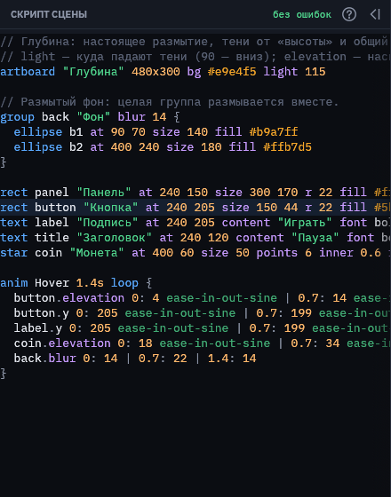
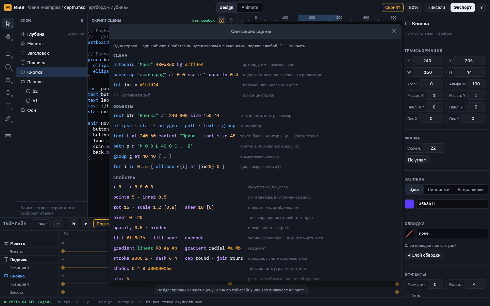

Скрипт сцены (.msc)
Новое: сетки deform, формы контура, ключи появления и общий кадр.
Сцена Motif — это короткий текст. Одна строка описывает один объект: тип, имя и свойства. Текст можно писать вручную, а можно рисовать мышью и смотреть, как он пишется сам.

Панель скрипта находится рядом с холстом:
- каждое изменение текста сразу перерисовывает сцену;
- клик по строке выбирает объект, а строки выбранного объекта подсвечены;
- пока в тексте есть ошибка, на холсте остаётся последняя рабочая версия, а строка с ошибкой подсвечена красным и объяснена по-русски;
- F1 или «?» в заголовке панели открывает шпаргалку, Ctrl+E сворачивает панель.
Как устроена строка
ellipse ball "Мяч" at 150 150 size 72 fill #ff5a36 stroke #1b1d24 4
│ │ │ └─ свойства: слово и значения, в любом порядке
│ │ └─ имя для панели слоёв (можно не писать)
│ └─ id: по нему объект находят анимации и игра
└─ тип объектаТипы объектов: rect, ellipse, star, polygon, path, text, group. Комментарии начинаются с // или с # в начале строки.
Полный пример
artboard "Главный" 480x360 bg #fff4e4
let ink = #1b1d24
ellipse ball "Мяч" at 150 150 size 72 fill #ff5a36 stroke ink 4
star star at 340 150 size 130 points 5 fill #ffc531
group coins at 36 40 {
for i in 0..5 {
ellipse coin{i} at {i * 28} 0 size 16 fill #ffd23f
}
}
anim Idle 1.2s loop {
ball.y 0: 120 ease-in | 0.6: 278 ease-out | 1.2: 120
star.rot 0: 0 linear | 1.2: 72
}Артборд, подложка, переменные
| Что | Запись | Пояснение |
|---|---|---|
| Версия формата | motif 1 | Первая строка файла. Motif пишет её сам при сохранении. Файл без неё — старый, он открывается как версия 1 и при сохранении получает строку. Файл более новой версии, чем понимает ваш Motif, не открывается: обновите Motif. Игры (Forge) принимают только файлы с этой строкой. Старые файлы, которые обязаны открываться всегда, лежат в tests/old-formats/. |
| Артборд | artboard "Имя" 480x360 bg #fff light 120 | Размер кадра, фон и куда падают тени от «высоты» (90 — вниз, по умолчанию). |
| Несколько холстов | artboard "Кнопка" 240x100 cell 1 0 | Каждая строка artboard открывает холст до следующей такой строки; всё выше первого холста (переменные, комментарии) общее для всех. cell — столбец и строка в сетке холстов, с нуля; без него холст встаёт в первую свободную ячейку. См. «Холсты». |
| Для чего сцена | artboard "Меню" 480x360 ui, … game | Режим редактора: ui — интерфейс, game — игровая графика, без слова — все инструменты. То же переключает «Всё / UI / Игра» сверху. |
| Подложка | backdrop "эскиз.png" at 0 0 scale 0.5 opacity 0.4 | Картинка-референс, только в редакторе. Файл ищется рядом со сценой. Можно добавить hidden. |
| Лист спрайтов | backdrop "run.png" sheet 8 2 frames 14 fps 12 frame 3 | Подложка — сетка кадров: колонки и ряды, сколько кадров занято (по умолчанию все), кадров в секунду (12) и кадр в Design (с 0). В Animate кадры идут по времени таймлайна. См. «Лист спрайтов». |
| Слои PSD | backdrop "герой.psd" hide "Цвет" "Заметки" show "Сетка" | Подложка из файла Photoshop: слои и группы, спрятанные (hide) и показанные (show) вопреки файлу, по имени; кавычка внутри имени пишется как \". Остальные — как в PSD. См. «PSD слоями». |
| Переменная | let gap = 28, let ink = #1b1d24 | Число или цвет, используется дальше по имени. |
| Выражение | {i * gap + 4} | Считается в фигурных скобках в значениях и в id. |
| Цикл | for i in 0..5 { … } | Повторяет строки внутри, i от 0 до 4. |
| Группа | group g at 40 40 { … } | Вложенные объекты двигаются вместе с группой. |
| Символ и копия | symbol Coin size=16 { … }, use Coin c1 at 40 40 size=24 | Рисуется один раз, вставляется много раз. См. «Символы». |
| Кость | bone arm at 100 80 len 60 { bone hand at 60 0 len 40 ik target }, rect sleeve … skin arm hand | Скелет, IK и фигуры, которые гнутся костями. См. «Кости и IK». |
| Морфинг | ellipse blob … morph star heart, ключи blob.morph 0: 0 | 1: 1 | 2: 2 | Фигура перетекает в контуры других фигур: 0 — она сама, 1 — первая цель. См. «Анимация». |
| Пружина | spring 3 0.3 | Ключи положения, размера и поворота догоняются с перелётом. См. «Физика». |
| Покачивание кости | bone tail … jiggle 2.5 0.4 | Кость отстаёт от родительской и раскачивается. |
| Сжатие и растяжение | squash 0.6 6 0.3 | Тянется на скорости, сплющивается при ударе. См. «Физика». |
| Частицы | ellipse spark … emit 40 life 1 speed 160 spread 50 weight -0.07 fade 0 | Фигура становится источником частиц. См. «Физика». |
| Верёвка, цепь, ткань | path cord … rope pin start wind 200, group lamp … hang cord, ellipse link … links chain, rect flag … cloth pin left | Провисает, качается, полощется. См. «Физика». |
| Жидкость | rect water … fluid 0.1, rect tap … fluid flow 60 | Вода в фигуре или льётся из неё. См. «Физика». |
| Мягкое тело | ellipse ball … soft 0.2 pressure 1 drive 0.4, rect wall … solid | Форму считает физика. См. «Физика». |
| Гравитация и ветер | world gravity 0 900 wind 200 0 gust 0.4; у объекта weight 0.5 sail 2; ключи world.wind-x 0: 0 | 2: 600 | Куда всё падает и куда дует ветер. См. «Физика». |
| Притяжение и вентилятор | ellipse hole … pull 2600 range 200, rect fan … rot -90 fan 600 cone 40; ключи hole.pull 0: 0 | 1: 4000 | Тянет к себе или дует в свою сторону. См. «Физика». |
| Объект на шаре | on planet lat 20 lon -30 alt 0 wrap, у шара yaw 30 pitch 10 | Орбита 2.5D. См. «Орбиты 2.5D». |
| Кисть | rough 3 [40], boil 8, seed 2, hatch 45 6 [1.5] [#цвет] [cross], grain 0.15 [2] [#цвет], bands 3; ключ rough | Рисунок «от руки»: неровный контур, дрожание линии, штриховка, зерно, свет ступенями. См. «Кисть». |
| Интерфейс | group button … ui slice 20 { … }, rect bar … slice 16 12, slice 22 46 22 22 | Деталь UI-набора; поля 9-slice: одно на все стороны, по бокам и сверху-снизу, или слева, сверху, справа, снизу. Состояния — анимации Hover Press Disabled Focus. См. «UI-наборы». |
| Элементы Godot | group hp ui progress { … }, rect juice … part fill, text caption … part text | Слово после ui — тип в Godot: button panel progress check slider scroll label. part — деталь внутри: background fill unchecked checked track grabber text. Подпись part text рисует Godot шрифтом темы. См. таблицу деталей. |
| 3D-тело | rect cube … extrude 90 yaw 30 pitch 25, ellipse cone … extrude 120 0; ключи depth taper yaw pitch | Фигура выдавливается в глубину и поворачивается в пространстве. См. «3D-тела». |
| Катится по шару | on globe … roll 0.3 0.05 weight 1 | Сам катится по шару вниз, толкает соседей. См. «Физика на шаре». |
| Машина состояний | machine Hero { state Idle … Idle -> Run when speed > 0.5 } | Какую анимацию играть. См. «Машина состояний». |
| Веса костей | weights leg { hip 18 1 at -10 -78 -10 -32 } | Мазки кисти весов поверх весов по расстоянию. См. «Веса кистью». |
Символы
Символ — это кусок сцены, который рисуют один раз, а вставляют много раз: монета, кристалл, кнопка, мяч. Поменяли символ — поменялись все копии. У каждой копии свои место, поворот, масштаб и параметры.
symbol Coin size=28 color=#ffd23f {
ellipse rim size {size} fill #d99a1e stroke ink 3
ellipse face size {size * 0.72} fill color
}
use Coin c1 at 60 44
use Coin c2 "Большая" at 140 44 size=44 color=#c9d1e0 rot 15
anim Idle 1s loop {
c2.rot 0: 0 linear | 1: 360
c1-face.sx 0: 1 | 0.5: 0.2 | 1: 1
}| Что | Запись | Пояснение |
|---|---|---|
| Символ | symbol Имя имя=значение … { … } | Пишется на верхнем уровне. Сам по себе не рисуется. Параметры — числа или цвета со значением по умолчанию, внутри символа это обычные переменные: size {size}, fill color. |
| Маска | symbol Ball clip size=64 { … } | Первый объект каждой копии обрезает остальные: рисунок на мяче виден только внутри мяча и сжимается вместе с ним. |
| Копия | use Имя id ["имя"] свойства параметры | Копия — это группа: at, rot, scale, opacity, blur и другие свойства группы, плюс имя=значение для параметров. Незаписанные параметры берутся по умолчанию. |
| Объекты копии | c1-face | id копии, дефис, id внутри символа. По нему анимируют и правят одну копию. |
| В цикле | for i in 0..6 { use Coin coin{i} at {i * 40} 0 } | Копии можно ставить циклом и в группы. |
Правка мышью объекта внутри копии (например, сдвиг c1-face) записывается в override и меняет только эту копию. Чтобы поменять все копии сразу, правьте блок symbol. Подробнее о работе с символами в редакторе — на странице «Панель свойств».
Свойства объектов
| Что | Запись |
|---|---|
| Позиция центра | at x y |
| Размер | size w [h] |
| Скругление (одно или по углам) | r 8, r 8 8 0 0 |
| Лучи и внутренний радиус звезды | points 5, inner 0.5 |
Контур (SVG path data, вокруг at) | d "M 0 -20 C 15 -20 20 0 0 20 L -10 0 Z" |
| Поворот, масштаб, наклон | rot 15, scale 1.2 [0.8], skew 10 [0] |
| Точка вращения | pivot -30 0 |
| Прозрачность, скрыть | opacity 0.5, hidden |
| Заблокировать: клики по холсту проходят сквозь объект | locked |
| Заливка | fill #ff5a36, fill none |
| Градиент вместо заливки | gradient linear 90 #ffe7a3 #ff9d5c, gradient radial #fff #3b5bff #000 |
| Дырки по правилу even-odd | evenodd |
| Обводка | stroke #000 2 |
| Пунктир, концы, углы | dash 6 4, cap butt|round|square, join miter|round|bevel |
| Слои обводки под фигурой | outline #1b1d24 18 #ffffff 10 |
| Тень (размытие можно опустить) | shadow 0 4 8 #00000055, shadow 4 4 #000 |
| Внутренняя тень | inset 0 4 6 #000000aa |
| Свечение: размер, разлив, цвет | glow 12 #ffd34d, glow 16 4 #6f93ffcc |
| Градиентная обводка | stroke-gradient linear 90 #ffe9a8 #b56a1f |
| Шум: сила 0…1 и крупинка | noise 0.15, noise 0.2 2 |
| Размытие объекта или группы | blur 6 |
| Высота над артбордом | elevation 12 |
| Наложение | blend multiply: screen, overlay, darken, lighten, color-dodge, color-burn, hard-light, soft-light, difference, exclusion, hue, saturation, color, luminosity |
| Маска у группы | group окно clip { ellipse форма … остальное … } |
| Стек у группы | group меню stack column center gap 10 pad 18 { … }: row или column, выравнивание start|center|end |
| Фон по размеру стека | rect фон r 18 fill #1f2333 fit внутри группы со стеком |
| Привязка к краю | anchor right, anchor center bottom: at считается от этой точки артборда |
Цвета пишутся как #rgb, #rrggbb или с прозрачностью #rrggbbaa (#00000055 — чёрный на треть).
Текст
text title "Заголовок" at 240 112 content "МОТИФ" font bold font-size 84 letter-spacing 6
text hint at 240 200 content "Первая строка\nвторая" align left line-height 1.4| Что | Запись |
|---|---|
Слова (\n — новая строка; \t — таб; \\ — буквальный обратный слеш; \" — кавычка) | content "Привет\nмир" |
| Шрифт | font bold, font regular, font "мой.ttf" |
| Размер, интервалы, выравнивание | font-size 48, letter-spacing 2, line-height 1.2, align left|center|right |
| Анимация букв | reveal 0.5 (доля появившихся букв), wave 6 (высота волны), phase 0.25 (положение волны) |
Анимации
anim Имя 1.2s [loop] {
объект.свойство время: значение [кривая] | время: значение [кривая] | …
event имя время время …
}Строка event — событие для игры: имя одним словом и одно или несколько времён в секундах, в пределах анимации (event step 0 0.2). У одной анимации каждое имя пишется одной строкой. Объект с именем event по-прежнему анимируется как event.x ….
Время — в секундах от начала анимации. Кривая после значения действует до следующего ключа, по умолчанию это ease-in-out. Имена свойств в анимации:
x y w h rot sx sy kx ky opacity r points inner fill stroke stroke_w, у текста ещё font-size letter-spacing reveal wave phase, для эффектов blur elevation shadow-x shadow-y shadow-blur glow inset-x inset-y inset-blur noise.
| Кривые | Запись |
|---|---|
| Базовые | linear, ease, ease-in, ease-out, ease-in-out, hold, spring |
| Покадрово | steps 4 |
| Своя кривая Безье | cubic 0.3 0 0.6 1.2 |
| easings.net | ease-in-sine … ease-in-out-bounce: sine, quad, cubic, quart, quint, expo, circ, back, elastic, bounce |
Формулы и override
Если значение задано формулой или циклом (например, at {i * 28} 0), редактор не трогает формулу при правке мышью. Вместо этого он дописывает правку в блок override в конце файла:
override {
coin2.y = 12
}Так формулы остаются формулами, а ручные правки видны отдельно. Строку из override можно удалить, и объект вернётся к значению по формуле.
Сцена — обычный текст. Файлы .msc удобно хранить в git рядом с игрой: в истории видно, какое число поменялось. Их можно генерировать скриптами и проверять командой motif check.
